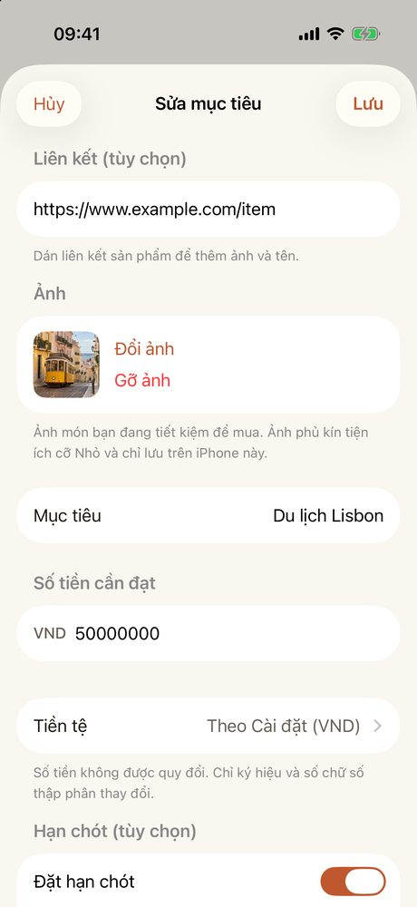
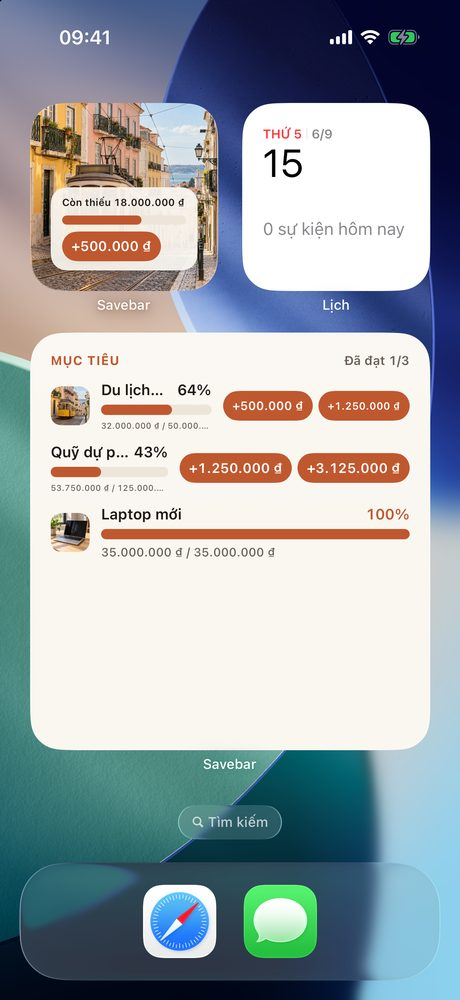

Cách đặt mục tiêu tiết kiệm lên Màn hình chính iPhone
Tiết kiệm cho một điều gì đó sẽ dễ hơn khi bạn nhìn thấy nó. Tiện ích đặt thanh tiến độ — đã để dành bao nhiêu và còn thiếu bao nhiêu — ở nơi bạn nhìn nhiều lần mỗi ngày, và cho phép thêm tiền chỉ với một chạm.
Đây là cách thiết lập với Savebar. Một mục tiêu và tiện ích cỡ Nhỏ được miễn phí.
1. Tạo mục tiêu
Mở Savebar và chạm +.
Nhập tên và Số tiền cần đạt.
Tùy chọn: bật “Đặt hạn chót” để xem số ngày còn lại và số tiền cần để dành mỗi ngày.
Tùy chọn: dán liên kết sản phẩm vào “Liên kết”. Ảnh và tên sẽ được điền tự động từ trang đó.
2. Chọn số tiền cho nút trên tiện ích
Ở “Số tiền trên tiện ích”, nhập số tiền bạn thường để dành. Nút trên tiện ích sẽ thêm số tiền đó chỉ với một chạm, không cần mở ứng dụng.

3. Đặt tiện ích lên Màn hình chính
Chạm và giữ một vùng trống trên Màn hình chính cho đến khi các ứng dụng rung lên.
Chạm Sửa (hoặc +) ở góc trên, rồi tìm “Savebar”.
Chọn cỡ Nhỏ rồi chạm Thêm tiện ích.
Mỗi lần để dành tiền, hãy chạm nút số tiền trên tiện ích. Thanh tiến độ và phần trăm thay đổi ngay tại đó.

Tiện ích lớn hơn trong ảnh này, với nhiều mục tiêu, thuộc Savebar Pro.
Muốn thêm?
Savebar Pro là mua một lần, không phải gói đăng ký:
Mục tiêu không giới hạn
Tiện ích cỡ Vừa và Lớn với nhiều mục tiêu, và tối đa hai nút số tiền cho mỗi mục tiêu
Tiện ích Màn hình khóa
Ứng dụng Apple Watch với các nút số tiền tương tự
Câu hỏi
Ứng dụng có kết nối với ngân hàng của tôi không?Không. Bạn tự nhập số tiền, nên không cần đăng nhập và không có gì phải liên kết.
Tôi có thể tạo bao nhiêu mục tiêu miễn phí?Một mục tiêu, kèm tiện ích Màn hình chính cỡ Nhỏ. Savebar Pro, mua một lần, cho phép tạo mục tiêu không giới hạn, có tiện ích cỡ Vừa và Lớn hiển thị nhiều mục tiêu, tiện ích Màn hình khóa và ứng dụng Apple Watch.
Tôi có thể thêm số tiền không có trên nút không?Có. Mở mục tiêu trong ứng dụng và chạm “+ Thêm” để nhập số tiền bất kỳ.
Làm sao chọn mục tiêu mà tiện ích hiển thị?Chạm và giữ tiện ích, chạm Sửa tiện ích rồi chọn mục tiêu.